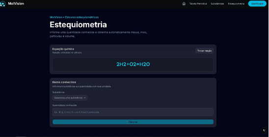

Meu nome é Eduardo, sou estudante do curso Técnico em Informática integrado ao Ensino Médio no IFMS. Tenho interesse em programação, tecnologia e química.
Estou cursando Informática no IFMS e já fiz um curso de Operador de Computador. Também desenvolvo projetos que aplicam conhecimentos de programação na prática.
O MolVision é uma aplicação web desenvolvida para unir tecnologia e química, facilitando o estudo de reações químicas por meio de cálculos de estequiometria e consulta de informações sobre substâncias químicas.

O projeto utiliza tecnologias de desenvolvimento web para construir sua interface, processar informações no servidor e armazenar dados em um banco de dados. Também utiliza o PubChem como fonte de informações químicas.
Tecnologias: Next.js, JavaScript, Node.js, Express, PostgreSQL e Prisma.
Conquistas:
Ver código do MolVision no GitHub
O SafeDrive é um projeto web desenvolvido para testar funcionalidades relacionadas ao GPS e à localização. A ideia é permitir avisos sobre acidentes nas estradas, ajudando a alertar motoristas sobre possíveis perigos durante seus trajetos.
O projeto envolve experimentos com recursos de geolocalização e o desenvolvimento de funcionalidades voltadas à segurança no trânsito.
Ver código do SafeDrive no GitHub
Também estudo desenvolvimento de jogos 2D utilizando a ferramenta Godot e a linguagem GDScript.
GitHub: Meu perfil no GitHub